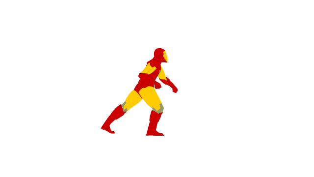

^ is my name, and I am a current student at Brown University, pursuing an Sc.B. in computer science.
Say what's up by checking out my
Github or
Linkedin,
email me, or check out the rest of my site to learn more about me!
Fun fact: Every song Drake has ever written can be listened to in one night, twice over.
Website currently under development.